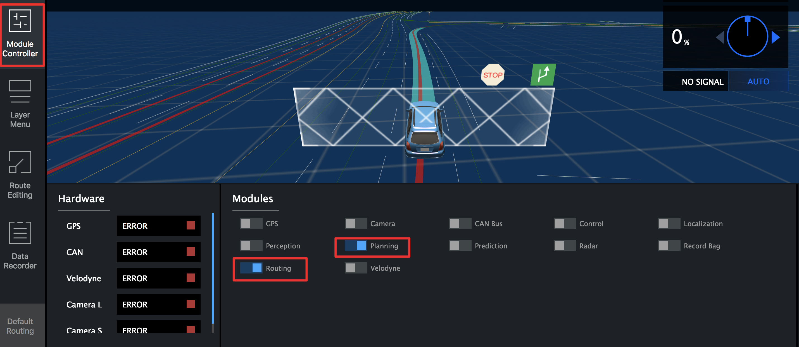

DreamView FAQs
I had difficulty connecting to http://localhost:8888 (Dreamview Web UI).
The Dreamview web server is provided by the dreamview node (A node is an
executable in CyberRT terminology). Before accessing Dreamview Web UI, make sure
Apollo is built within Apollo development Docker container following
Apollo Software Installation Guide.
Once built, dreamview node will be started by running
bash scripts/bootstrap.sh.
So if you can not access Dreamview, please check:
Make sure you have the Dreamview process running correctly. In the latest version,
bash scripts/bootstrap.shwill reportdreamview: ERROR (spawn error)if dreamview fails to start. You can also check with command:ps aux | grep dreamview.Make sure the address and port are not blocked by the firewall.
Make sure you’re using
<apollo_host_ip>:8888instead oflocalhost:8888if you are accessing the Dreamview UI through another host.
Dreamview does not open up if I install more than 1 version of Apollo?
This issue occured because of port conflict error. Even though you setup two different docker environments, both of them are still trying to use port 8888 on your machine, therefore causing a port conflict issue. If you’d like to run both versions at the same time, please make sure different ports are set.
To do so,
Open
dreamview.conffile under modules/dreamview/conf add--server_ports=<PORT_NUMBER>to the end of the file. Ex: –flagfile=modules/common/data/global_flagfile.txt –server_ports=5555Restart apollo
This way, dreamview can be accessed from http://localhost:<PORT_NUMBER> (http://localhost:5555 for this example)
Dreamview is too slow. How do I resolve it?
If you feel Dreamview is taking too long to load/work, please run both the WebGL reports. If there are any missing drivers, please install them
How to draw anything in Dreamview (e.g. an arrow)
Dreamview uses https://github.com/mrdoob/three.js as graphics library. You can
modify the frontend code to draw an arrow using the corresponding API of the
library. After that you need to run a ./apollo.sh build_fe to compile.
How can I test planning algorithms offline?
Use dreamview and enable sim_control on dreamview to test your planning algorithm.
Adding a new point of interest permanently in the Dreamview interface
There’s a default_end_way_point file for each map to specify point of interest, you can refer to the following file.
What’s the function of sim_control in the backend of dreamview
It simulates a SDC’s control module, and moves the car based on planning result. This is a really convenient way to visualize and test planning module
How do I turn on Sim Control?
Purpose of sim control: drive the car based on the planning trajectory. Good for debugging planning algorithms.
Apollo 2.5 or after: simply turning on the SimControl switch as seen in the image below:

Apollo 2.0 or older: you would need to enable the sim control manually, which can be performed as follows:
Open
modules/dreamview/conf/dreamview.confAdd “–enable_sim_control=true” to the second line of the file
Restart apollo using our bootstrap script
bash scripts/bootstrap.sh stop
bash scripts/bootstrap.sh start
Please note, planning and routing modules (see image below) should be ON while using SimControl. To navigate the ego-car, select either “route editing” or “default routing” from the side bar to define a route. You can turn the sim_control on and off from the toggle. However, a new routing request is needed each time the sim_control is restarted. 
I want to plot my own graphs for my algorithms, where should I go?
Go to the PnC Monitor section in Dreamview Doc.
What is Dreamland?
Dreamland is Apollo’s web-based simulation platform. Based on an enormous amount of driving scenario data and large-scale cloud computing capacity, Apollo simulation engine creates a powerful testing environment for the development of an autonomous driving system, from algorithms to grading, and then back to improved algorithms. It enables the developers and start-ups to run millions of miles of simulation daily, which dramatically accelerates the development cycle.
To access Dreamland, please visit our Simulation website and join now!
More DreamView FAQs to follow.